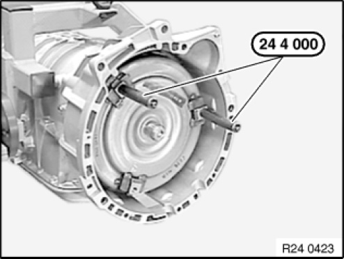
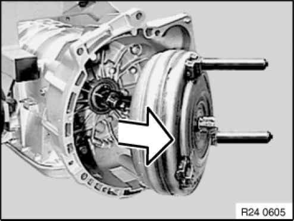

24 40 011 Removing and Installing/Replacing Torque Converter (GA6HP19Z)
24 40 011 Removing And Installing/Replacing Torque Converter (GA6HP19Z)
Special tools required:

IMPORTANT:
After completion of repair work, check transmission oil level.
Use only approved transmission oil.
Failure to comply with this instruction will result in serious damage to the transmission.

Necessary preliminary tasks:
- Remove automatic transmission

Screw special tool 24 4 000 into torque converter.
Remove torque converter.
NOTE: When torque converter is removed, transmission oil flows out.

Installation note:
When installing, do not damage radial shaft seal and bearing.
If the torque converter is not correctly installed, the driver of the pump impeller may be damaged when the transmission is flanged to the engine.

Remove torque converter and set down vertically.
Installation note:
Push torque converter through radial shaft seal onto transmission shaft to the limit position.
Press torque converter by hand into converter housing and turn in the process. Converter hub recess must snap into place in driver of pump impeller. Torque converter must be felt to slip inwards.